Calle Crisologo
Calle Crisologo is Vigan's most populationar tourist attraction. The grounds and pavements of this preserved street are made of cobblestones, and both sides are lined with ancestral houses that are reminiscent of old Spanish towns.
During the daytime, the street is a busy commercial district, with most shops selling quality antiques, furniture, and jewelry pieces.
You can indulge yourself in souvenir shopping, including native food products and delicacies, or snag world-class hand-woven clothing, blankets, and other accessories at Rowilda's Weaving.
You can ride a kalesa (horse-drawn carriage), which is the only vehicle plying Calle Crisologo.
A kalesa ride is good for an hour and can take you around Calle Crisologo and the rest of the Vigan Heritage Village, including the Vigan Cathedral and Plaza Burgos.
It's a totally different scene at night, as Calle Crisologo transforms into a dining strip where loads of people eat alfresco and enjoy drinks to cap the night off.

Vigan Cathedral
Also called the Saint Paul Metropolitan Cathedral, the Vigan Cathedral is another important landmark in Ilocos Sur's capital city.
It stands in a prominent spot just in front of Plaza Salcedo, which is why you might find many tourists having their pictures taken between these notable structures.
The cathedral pays homage to Baroque architecture as seen in the ornate details outside and inside the church, although the cathedral has had its share of renovations too to make it sturdier.
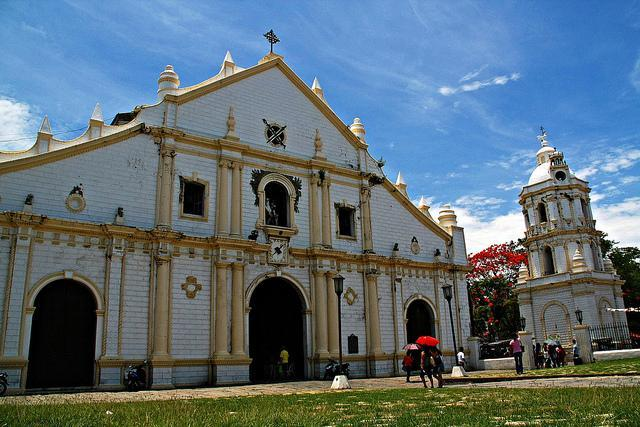
Bantay
Nothing else can give you the best view of Vigan than the Bantay Church Bell Tower. The belfry is situated on a hill overlooking the Bantay district in northeast Vigan.
You'll need to climb a winding staircase to get to the top of the brick structure, where you'll find an enormous bell hanging right in the middle of the tower.
The watchtower served as a good vantage point for the natives of Ilocos to see approaching enemies during the Spanish reign and World War II.
Today, people honor the memory of the tower by taking pictures at the foot of the hill, making it look as if they're holding it dearly on the palm of their hands or forming a heart shape with their arms extended over the tower.
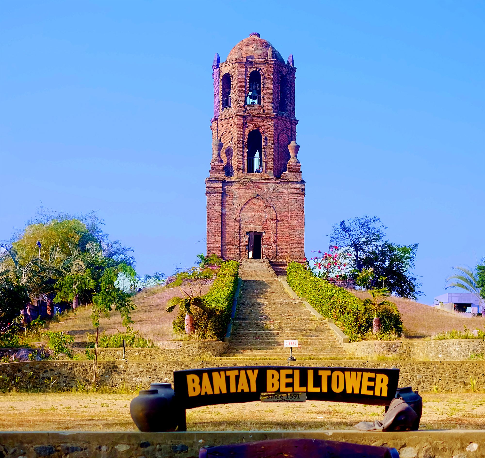
Pagburnayan Jar Factory
One good thing about touring Vigan is that you get to learn a lot about its history, culture, and way of life through the town's homegrown establishments.
In order to help people appreciate the industry of jar-making, the factory is open for tourists who want to see and experience pottery making first hand, from simple, basic designs to more artistic earthen jars.
The staff will also tell you an interesting background about the origins of pagburnayan, the art of producing jars, which was inspired by Chinese traders who came to settle in Vigan and then later intermarried with Ilocanos and Ilocanas.
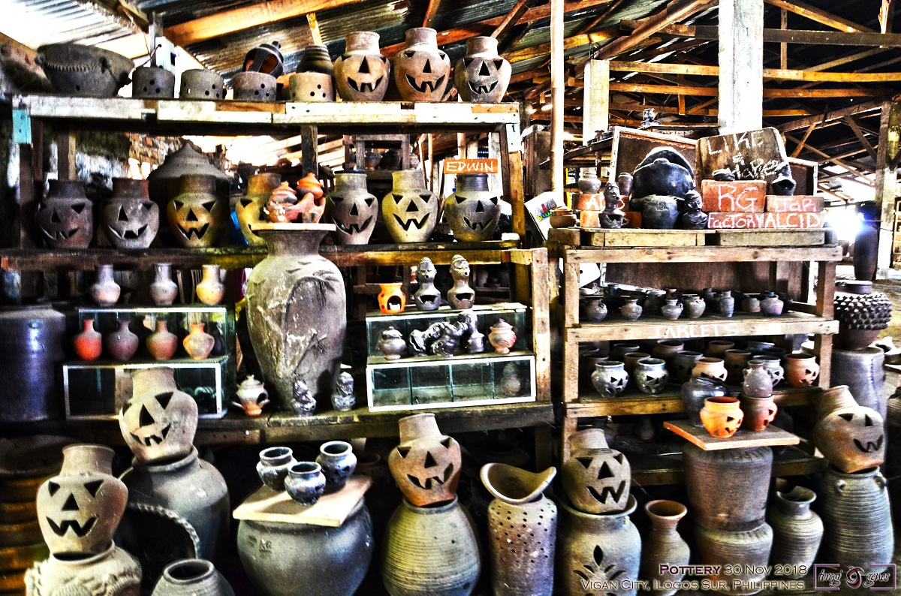
Dancing Fountain Show at Plaza Salcedo
The park between Vigan Cathedral and the Provincial Capitol turns from a haven for picture taking at day to a stage of dancing lights at night that everyone can enjoy for free.
Plaza Salcedo features an outdoor light and water show that's comparable to those you might see in other countries.
As darkness falls, the fountain area at Plaza Salcedo gets jam-packed with tourists who come to witness a spectacular show of bright laser lights that illuminate the square.
Jets of water spout from "dancing fountains" right on cue, making it look as if they're moving with flickering lights and slow- to fast-tempo music playing on the background.
Everything is so well executed you can imagine the waters doing turns and leaps, and then returning to the same position before another round of mesmerizing dance performance begins.
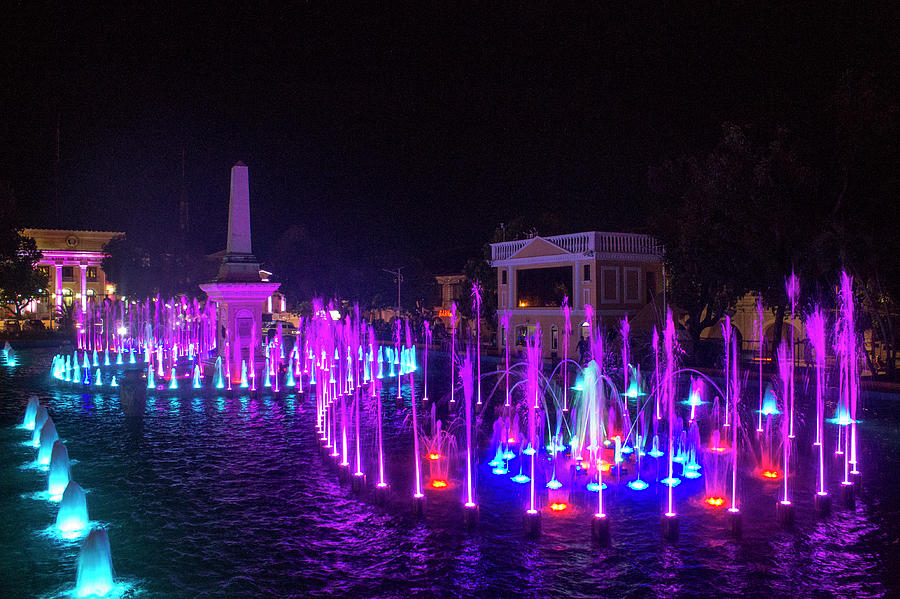
Baluarte Zoo
Not too far from the center of Vigan City, you'll find the Baluarte Resort and Mini Zoo sprawling on roughly 100 hectares of rolling plains and hills.
The zoological park belongs to local politician Chavit Singson who used his property to share his love for safari to the public.
Admission is free, and you can take snapshots with the more tamed animals like birds and ponies.
Baluarte's version of Jurassic Park includes make-believe life-size dinosaurs, which can be an amusing background for your photoshoots. There are a lot of activities in Baluarte Zoo you can try.
Of course, it's best if you stay clear of wild animals in the Baluarte like snakes, crocodiles, lions, and tigers, among others, and just settle for the daily shows featuring the animals that are kept in the zoo.
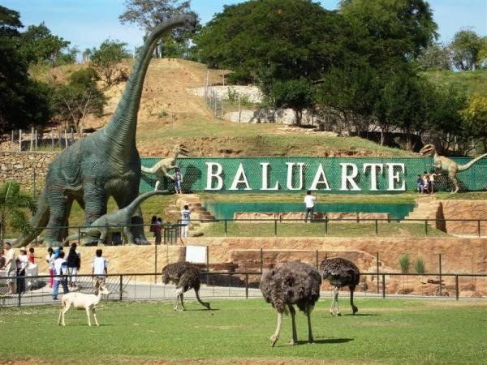
Vigan Bagnet
Vigan Bagnet is the Ilocano version of lechon kawali. Large chunks of pork leimpo, belly or pork sides, deep fried for at least two times until crispy. It is serve with tamatis and lasuna with bagoong nga munamon. Just the thought of it makes every genuine Ilocano drool.
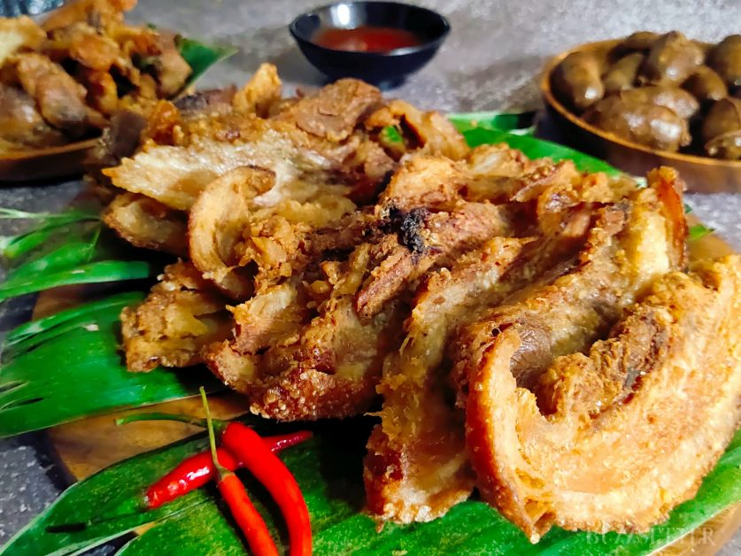
Vigan Longanisa
Longaniza or longganisa in Filipino, is a kind of sausage that was first introduced by the Spaniards during the colonization era. It is closely similar tochorizo where in a ground pork is the main ingredient. Region by region has its own trademark in preparing it. But in the Philippines, the most famous maybe of its variants are the Lucban and Vigan.
Vigan Antiques
For the really serious collectors, the city is a haven for picking up antiques. Furniture, carvings, horse shoes, milling stones, they have it all. This is a colonial era city after all. Just make sure you have a plan when it comes to transporting them back home.
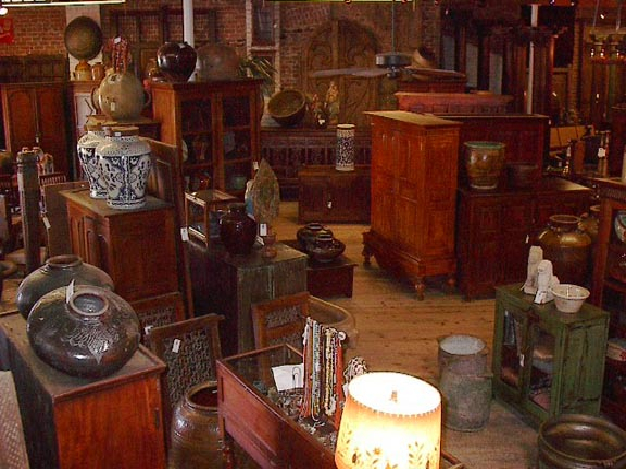
Vigan Handicraft
They have baskets, wallets, bags and hats made from buri and water lilies from the nearby rivers.
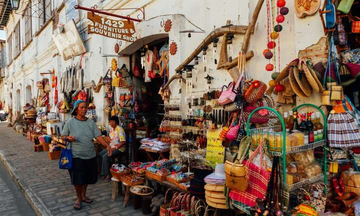
Vigan Burnay
Burnay is unglazed earthen jars, an industry that dates back to pre-colonial times when immigrants from China came and settled in Vigan.
Vigan T-shirts
T-shirt buffs would also have a field day in Vigan. Numerous designs, from the traditional to the funny can be bought at the souvenir stalls for affordable prices. I especially love a particular shirt enumerating the various Ilocano dishes that has a very R18 feel to it.
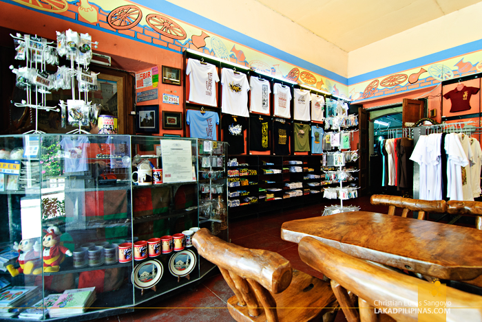
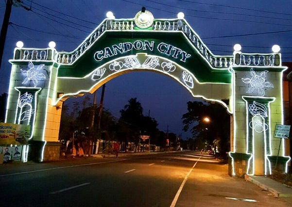
Candon City
This once small resort town is known for making the heaviest and largest kalamay, a sweet and sticky snack made from sticky rice, coconut milk and sugar, in the world. This city also has a rich historical background. In its legends, the name of the city is derived from the legendary "kandong" tree which is now but extinct in the area. Its patron saint is John of Sahagun and his feast day is celebrated every June 12.
Candon is the center of the 2nd district of Ilocos Sur. Government District offices are all located in the city. The city supports more than 100,000 citizens in terms of commercial and industrial services.
City of Candon is a 4th class component city in the province of Ilocos Sur, Philippines. According to the 2015 census, it has a population of 60,623 people.
Dubbed as the "Tobacco Capital of the Philippines" the city is the country's largest producer of Virginia-type tobacco.
Places you can Visit
Candon Church (Saint John de Sahagun Parish Church)
The Saint John of Sahagun Parish Church, locally known as the Candon Church, is a church situated in the city of Candon, Ilocos Sur, Philippines. Constructed with an Earthquake Baroque design, the church is maintained and is still being used up to present. The church's four-storey octagonal bell tower has an alternating open and blind apertures, a balustrade and is topped by a campanile (bell tower).

Candon City Museum
The Cariño House in the heart of Candon City was recently restored and opened into the city’s museum. The ancestral house of the Candon Cariños was already remarkable, having been built 400 years ago for the alcalde mayor and later owned by the father of Doña Maria Josefa Gabriela Cariño Silang, whom we all know as Gabriela Silang.After the restoration early this year, the Cariño House was turned into the Candon City Museum.
/The Candon City Museum will indeed hope to highlight Candon City as the one that preceded the nation’s call for independence. In the museum are some of Don Belong’s memorabilia, like his silver salakot, library, and battle uniform, among other items. Also displayed is the seal of the Republic of Candon and a painting of Don Belong. Also included in the museum is the story of the first Filipino sacadas, all from Candon, who arrived in Hawaii in 1906. The 15 Candonians worked as plantation workers there and they paved the way for the First Filipino Migration Wave in the US. Memorabilia of those who followed them were included in the museum.
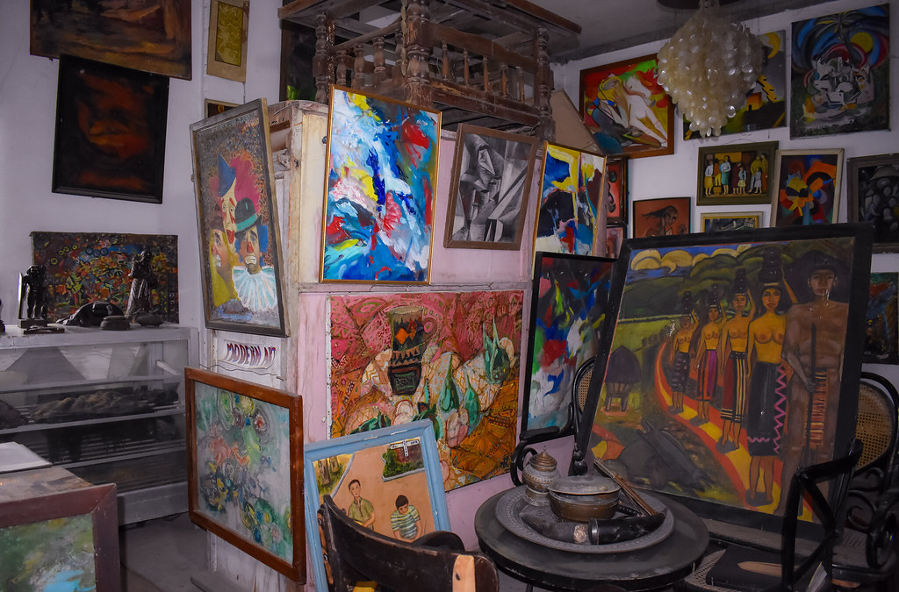
Candon City Museum
Ban-Aw Resort is an ideal destination for all sorts of group getaways, from family reunions to seminars and weddings. The resort grounds and rooms are suited for accommodating families and small groups year-round. The event hall is designed to host all kinds of events for up to 200 guests.
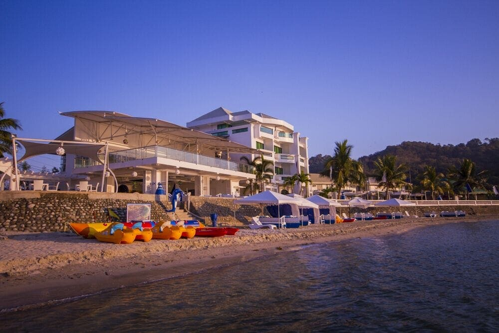
Products
Candon Kalamay
Kalamay is a sticky sweet delicacy made with coconut milk, brown sugar, and ground glutinous rice. They can be flavored with margarine, peanut butter, or vanilla. Want to try the best and innovative versions of kalamay in the city? Drop by the Kalamay Festival, which is held every March.
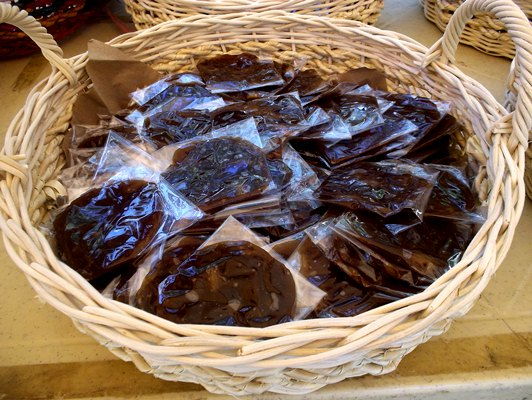
Corn Snacks
Being a major producer of corn, Candon City makes treats from dried kernels and made into different forms of snacks. Various flavors from simple garlic to spicy barbecue with popped and cracked crunchy versions are available for pasalubong shoppers. Products are in the same lane with kalamay vendors.
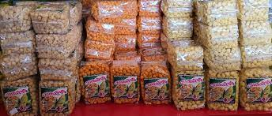